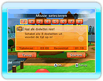

14 |
Eén speler |
 |
|
Als je 'Eén speler' selecteert in het hoofdmenu, kun je uit twee modi kiezen: missiestand of wedstrijdstand. Als je voor het eerst speelt in missiestand, ga je naar de trainingsruimte om de besturing te oefenen.
● Missiestand
● Wedstrijdstand |
 |
 |
 |